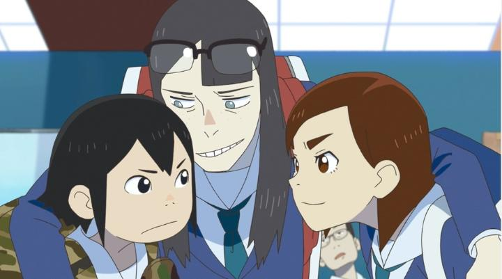

For a massive, dedicated anime fanbase, you can imagine that a series about MAKING anime would be an instant hit. But there are a lot of different factors in anime production, and it can be difficult to focus on the right things while still providing a fun story. Animation is work, after all, and the process isn't always as exciting as the final product. For example, despite being an enthusiast for all things animation, I didn't love 2014's critically acclaimed "Shirobako," as it focused mainly on the struggles of landing a job and the tedious headaches of working with your peers; it was more about the professional experience in the office, and less about seeing creative filmmaking and artistic talent in action. With that perspective, who better to lead a show about the fun of animation than Masaaki Yuasa? His 2020 show "Keep Your Hands Off Eizouken!" is exactly the type of story to portray what makes cartoons so inspiring. It cleverly sets the story in high school, allowing the characters to geek out about the details of their favourite anime, while they proceed an exciting but low-stakes effort to produce their own. For non-professionals and hobbyists (the likely audience for most of the industry), this is a perfect representation of us, and I was totally engaged for the ride. The context of the story starts with two misfit students: Midori and Sayaka. They are anti-social and have trouble picking a club to join, with Midori wanting to quietly doodle ideas in her sketchbook, and Sayaka uninterested in anything that doesn't produce a profit. By chance, they find a third girl, Tsubame, who'd like to join the anime club but is encouraged by her parents to choose something more practical. Sayaka recognizes a spark from the other two when they spend hours talking about ideas for an anime film (Midori with art and story, and Tsubame with a natural talent for motion and animation), and they all agree to start a "filmmaking" club... where the format happens to be animation. While there doesn't appear to be a direct translation, "Eizouken" seems to be a word for "filmmaking club," and the three arcs in the 12-episode series show the trio struggling to make their film while avoiding the ire of other clubs and teachers. These three are not your typical cute, ditzy anime girls. Their character designs aren't meant to be "marketably" attractive, with Midori being short and having large bug-eyes, and Sayaka being awkwardly tall with a constant grimace on her face. Tsubame is a little cuter, as her character is supposed to be a famous teen model outside of school (this plays into the story often), but even she would have a forgettable design if not for her casual demeanor in the club room. This explicit avoiding of fanservice (for the most part... there is a communal bath scene) allows the girls to feel more human and relatable, and allows the show to focus on their quest to produce what would become multiple anime shorts. They each have natural talents and weaknesses for the process. Midori is creative and hard-working when inspiration strikes, and becomes the "film director" of the club, but has never led a production from start to finish, and struggles with gaps in story or context. Tsubame can get carried away with animation and her reluctance to make shortcuts, even if it makes for an unrealistic production timeline. At a glance, Tsubame seems like the odd one out, as she has virtually no interest in cartoons... but she recognizes the strong potential of the other two to create something great, especially when they're together. Her pragmatic point-of-view makes her perfect for the club's "producer" role, keeping track of progress, pressuring the others to make tough decisions, figuring out funding and marketing, and dealing with the school staff. She seems harsh, but proves to be the hero of the series multiple times, and is a great example for anyone who didn't know what a "producer" actually does.  A large part of the show is just these three characters gushing about their love for animation, whether it's from existing shows (there are multiple references, including for Hayao Miyazaki's "Future Boy Conan" series), and explaining practical production tips that even I didn't know about (for example, old traditional anime limited the number of overlaid cels to around four, because the cels weren't perfectly clear and would blur if you used too many). There are beautiful moments of magical realism, where the girls imagine their film in real life, and run and fly through their paper-and-pencil world with wild abandon. This is plently interesting, but can feel more like an educational presentation instead of a story. Thankfully, there is a real story here too, typically from how the teachers fight against the idea that an anime qualifies for a live-action film club ("we already have an anime club," they try to say, despite the two clearly having different goals). Or the student council stopping the girls from raising money for equipment. Or from collaborating with the art and music clubs, only to realize how hard it is to direct other teenagers to be on the same wavelength. There's drama. There's character development. There are climatic chase scenes. Yuasa's always had a knack for story, and he pulls it off with "Eizouken!." The only major hole I had with the story was their discovering of old animation desks in an abandoned wing of the high school. Was there an old animation club years ago? Why did it no longer exist, and why was the school so hesitant for a new club to replace it? The girls geek out over the antiques rather than asking these questions, leaving behind a potentially fascinating story development. Visually, the stylized grubbiness of the character designs, the detailed town, and the fun scenes in the fictional anime, all make the show look unique, in a good way. Animation is limited for most of the show, but works plenty fine when it needs to. The music is great, both the score and the catchy opening theme "Easy Breezy" by chelmico (easily one of the best openings of 2020). The eventual English dub (the Bluray from Sentai Filmworks didn't come out until 2023) is pretty strong, nailing the eccentric personalities for the lovable animation dorks. It's easy-breezy to recommend "Keep Your Hands Off Eizouken!," not just to animation fans, but also those curious to understand why we love cartoons so much. And maybe even to animation professionals, who want to remember why they got into the industry in the first place.
- "Ani" More reviews can be found at : https://2danicritic.github.io/ Previous review: review_Kase-san_and_Morning_Glories Next review: review_Keijo